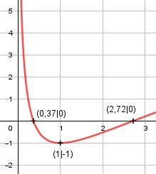

Aufgabe 156 f(x) = (ln x)2 - 1 Kettenregel erste Ableitung: 2 * ln x f'(x) = ---------- x Quotientenregel zweite Ableitung: 2 u = 2 * ln x, u' = --- x v = x, v' = 1 2 --- * x - 1 * 2 * ln x x f''(x) = ------------------------ x2 2 - 2 * ln x f''(x) = --------------- x2 Zur Beurteilung, ob f'''(x) ≠ 0: (Begründung siehe Aufgabe 105) 2 u = 2 - 2 * ln x, u' = - --- x -2 ---- u' x -2 f'''(x) = --- = ----- = ---- ≠ 0 für x ≠ 0 v x2 x2 Wegen ln x, muss x > 0 sein Definitionsbereich: 0 < x < ∞ Senkrechte Asymptote: Für x gegen 0 geht f(x) gegen ∞ Wertebereich: f(x) wird am kleinsten, wenn x = 1 (Extremum) und f(1) = -1 --> -1 ≤ f(x) < ∞ Symmetrie zur y-Achse bzw. zum Punkt (0|0): f(-x) = (ln (-x))2 - 1 ≠ f(x) --> keine Achsensymmetrie -f(-x) = -[(ln (-x))2- 1] ≠ f(x) --> keine Punktsymmetrie Nullstellen: f(x) = 0 (ln x)2 - 1 = 0 |+1 (ln x)2 = 1 |ⱱ ln x = ± 1 x1 = e1 = 2,72 N1(2,72|0) x2 = e-1 = 0,37 N2(0,37|0) Schnittpunkt mit der y-Achse: x = 0 liegt nicht im Definitionsbereich --> kein Schnittpunkt Extrempunkte: f'(x) = 0 2 * ln x ---------- = 0 |* x x 2 * ln x = 0|:2 ln x = 0 x = e0 = 1 f(1) = (ln 1)2 - 1 = -1 2 - 2 * ln 1 f''(1) = ------------- > 0 --> 12 Tiefpunkt (1|-1) Wendepunkte: f''(x) = 0 2 - 2 * ln x -------------- = 0 |*x2 x2 2 - 2 * ln x = 0|+2 * lnx 2 * ln x = 2 |:2 ln x = 1 x = e = 2,72 f(e) = (ln e)2 - 1 = 0 --> WP(2,72|0) Graph:
